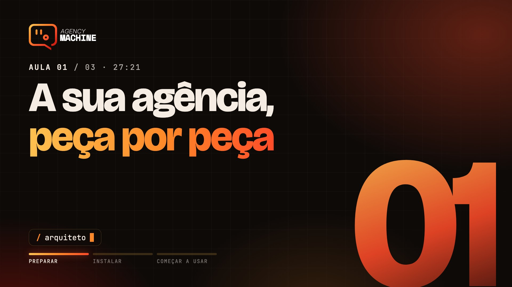

↓ Baixar thumbAula 01 · 27:21
A sua agência, peça por peça
Antes de instalar, entenda o que você acabou de pegar: o Arquiteto e os 14 profissionais, o cofre onde a agência mora e a pasta gêmea que guarda a mídia. Você também vê o que deixar pronto e monta o seu Suporte, que tira dúvidas a qualquer hora.
- A agência roda dentro do seu Claude, no plano que você já assina
- O Arquiteto, os 14 profissionais e o Revisor
- O cofre, o supercérebro no Obsidian e a pasta gêmea
- As 3 contas grátis que ligam o Espião: Groq, Gemini e Apify
- O seu Suporte Agency Machine, montado em 3 minutos
- O obrigatório para instalar: Mac ou Windows, Claude Pro ou Max e 8 GB livres
 ↓ Baixar thumb
↓ Baixar thumb ↓ Baixar thumb
↓ Baixar thumb